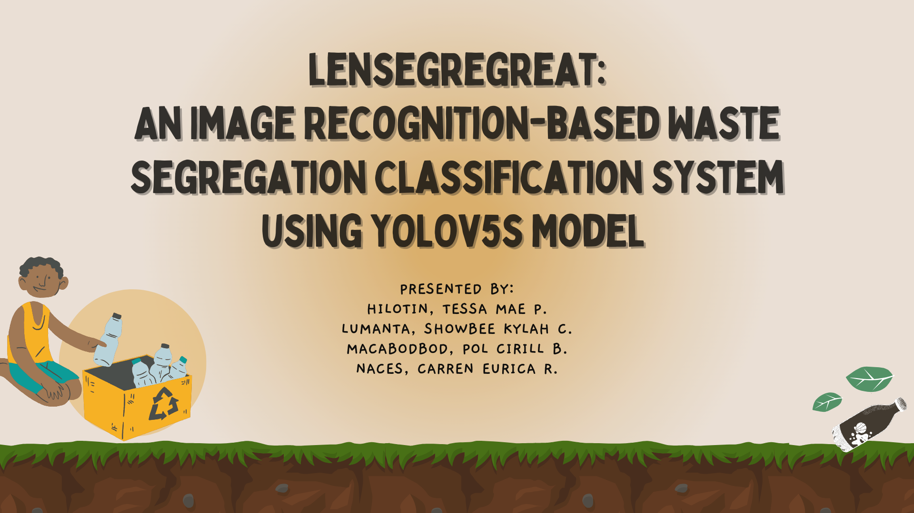

- Projects
- Capstone Project
Project Description
The study developed a real-time waste detection and classification system using the You Only Look Once (YOLO) deep learning model to classify waste commonly generated by children. This system is designed to classify biodegradable, non-biodegradable, and recyclable waste materials. The study focused on educating children about proper waste segregation.

Project Information
- Title: LENSEGREGREAT - An Image Recognition-Based Waste Segregation Classification System using YOLOv5 Model
- Course: Undergraduate Capstone Project
- Date: February 2023
- Skills Demonstrated:
- Programming Languages: Proficient in Python for data preprocessing, model training, and integration.
- Machine Learning: Utilized various machine learning algorithms for model development and optimization.
- Deep Learning: Implemented the YOLOv5 deep learning model for real-time object detection and classification.
- Data Analysis: Conducted in-depth data analysis to understand waste patterns and optimize model performance.
- Computer Vision: Leveraged OpenCV for image processing and computer vision tasks.
- Data Visualization: Created informative visualizations to present data-driven insights.
- Collaboration Tools: Utilized Google Sheets and Google Colab for collaborative work and data sharing.
- Notebook Documentation: Proficient in Jupyter Notebook for code documentation and project management.
- Project Management: Managed project milestones, timelines, and resources effectively.